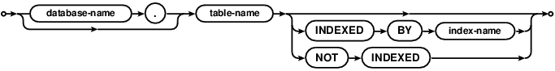

Choose any three.
|
|
SQLite里的SQL
SQL As Understood By SQLite
INDEXED BY
INDEXED BY短语会强制SQLite 查询规划器在DELETE、 SELECT和 UPDATE命令操作中使用指定的索引。INDEXED BY子句是SQLite特有的，并不适用于其它的SQL数据库引擎。INDEXED BY按下面语法图使用：
The INDEXED BY phrase forces the SQLite query planner to use a
particular named index on a DELETE, SELECT, or UPDATE statement.
The INDEXED BY phrase is an extension that is particular to SQLite and
is not portable to other SQL database engines.
The INDEXED BY phrase can be seen in the following syntax
diagrams:

"INDEXED BY index-name"短语指定了在前面的表中搜索数据必须使用的索引名。如果这个索引不存在或者无法用户当前查询，那么在SQL语句的准备期就会失败。 "NOT INDEXED"子句表示在访问前面的表时不允许使用索引，包括使用UNIQUE和PRIMARY KEY约束创建的索引。不过即使指定了"NOT INDEXED"，还是会使用 INTEGER PRIMARY KEY来搜索数据的。
The "INDEXED BY index-name" phrase specifies that the named index
must be used in order to look up values on the preceding table.
If index-name does not exist or cannot be used for the query, then
the preparation of the SQL statement fails.
The "NOT INDEXED" clause specifies that no index shall be used when
accessing the preceding table, including implied indices create by
UNIQUE and PRIMARY KEY constraints. However, the INTEGER PRIMARY KEY
can still be used to look up entries even when "NOT INDEXED" is specified.
一些SQL数据库引擎提供了一个非标准的"hint"机制来指定处理特定语句时建议查询优化器使用某个索引。SQLite中的INDEX BY子句不是一个暗示机制，所以不应当这样使用。INDEXED BY子句不是给优化器一个使用某个索引的建议，而是要求优化器必须使用某个索引。
Some SQL database engines provide non-standard "hint" mechanisms which
can be used to give the query optimizer clues about what indices it should
use for a particular statement. The INDEX BY clause of SQLite is
not a hinting mechanism and it should not be used as such.
The INDEXED BY clause does not give the optimizer hints about which index
to use; it gives the optimizer a requirement of which index to use.
If the query optimizer is unable to use the index specified by the
INDEX BY clause, then the query will fail with an error.
INDEXED BY子句不是为调整查询性能而设计的。INDEXED BY子句的目的是为了当库结构发生变化时抛出一个运行时错误。例如删除或创建一个index，会引起一个时间敏感的查询发生变化。INDEXED BY子句是设计用来在回归测试中发现不良的查询规划变动。开发者应该尽量避免在应用的设计、实现、测试、优化等阶段使用INDEXED BY。如果必须要使用INDEXED BY，那么应当在设计已经"锁定"后尽可能晚的加入进来。
The INDEXED BY clause is not intended for use in tuning
the performance of a query. The intent of the INDEXED BY clause is
to raise a run-time error if a schema change, such as dropping or
creating an index, causes the query plan for a time-sensitive query
to change. The INDEXED BY clause is designed to help detect
undesirable query plan changes during regression testing.
Developers are admonished to omit all use of INDEXED BY during
application design, implementation, testing, and tuning. If
INDEXED BY is to be used at all, it should be inserted at the very
end of the development process when "locking down" a design.
参见：
See Also:
查询计划清单告诉了开发者解决查询规划问题的几个步奏。注意，使用INDEXED BY是最后的手段，只有当其它所有机制都没有办法解决的时候才可以使用。
The query planner checklist describes steps that application developers should following to help resolve query planner problems. Notice the that the use of INDEXED BY is a last resort, to be used only when all other measures fail.一元操作符 "+"可以用来取消WHERE中的片段使用索引。适当地使用一元符+ 通常可以帮助预防查询规划器自由的使用不好的索引，改为使用指定的索引。适当地放置一元符+是一个比较好的控制查询中索引使用的方法。
The unary "+" operator can be used to disqualify terms in the WHERE clause from use by indices. Careful use of unary + can sometimes help prevent the query planner from choosing a poor index without restricting it to using one specific index. Careful placement of unary + operators is a better method for controlling which indices are used by a query.使用sqlite3_stmt_status()C/C++接口和SQLITE_STMTSTATUS_FULLSCAN_STEP 与 SQLITE_STMTSTATUS_SORT参数可以用来在运行时发现一个没有有效使用索引的SQL语句。许多应用更喜欢使用sqlite3_stmt_status()接口来发现滥用的索引，而不是本文介绍的INDEXED BY短语。
The sqlite3_stmt_status() C/C++ interface together with the SQLITE_STMTSTATUS_FULLSCAN_STEP and SQLITE_STMTSTATUS_SORT verbs can be used to detect at run-time when an SQL statement is not making effective use of indices. Many applications may prefer to use the sqlite3_stmt_status() interface to detect index misuse rather than the INDEXED BY phrase described here.